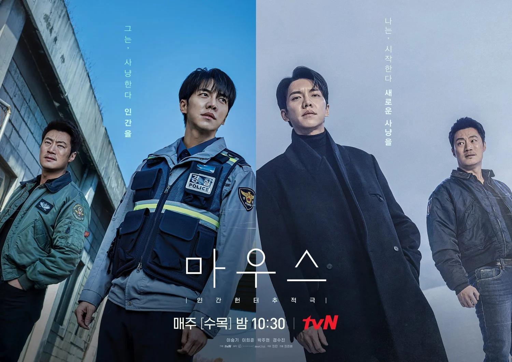

MOUSE, DRAMA KOREA SERIES BERTEMA MISTERI YANG PENUH PLOT TWIST

Beberapa tahun terakhir ini, drama korea semakin dikenal dan dinikmati oleh banyak penonton. Apalagi,
sejak pandemi yang mengharuskan orang untuk beraktivitas di dalam rumah, pamor drama korea semakin
naik drastis! Mouse, salah satu judul drama korea yang ramai dibicarakan pada tahun 2021 kemarin.
Drakor yang dibintangi oleh aktor maestro bertema action, yaitu Lee Seung Gi dan Lee Hee Joon telah
tamat beberapa tahun lalu. Kalian penasaran dengan drakor bertema psikopat satu ini? Yuk, simak
penjelasannya di bawah ini.
SINOPSIS
Drama Mouse bercerita tentang seorang detektif yang ingin melakukan balas dendam atas kematian orang
tuanya. Detektif tersebut bernama Go Moo Chi. Kemudian, terdapat karakter lain yang merupakan
seorang polisi muda dan jujur yang selalu membela keadilan bernama Jung
Ba Reum. Selain detektif dan polisi baik yang telah disebutkan, terdapat karakter siswi SMA yang
cantik dan hebat dalam bela diri bernama Oh Bong Yi. Ketiga karakter ini merupakan karakter inti
dalam perkembangan cerita serial drama Mouse.
Awal cerita dimulai dengan masa lalu Go Moo Chi ketika ia dengan keluarganya sedang ingin berkemah
di suatu tempat yang cukup terpencil dan jauh dari keramaian. Nasib buruk menimpa mereka,
sesampainya di lokasi perkemahan, ternyata mereka diikuti seseorang yang tak lain dan tak bukan
adalah seorang psikopat. Orang tuanya terbunuh oleh psikopat tak dikenali, dan kakaknya berusaha
untuk melindungi adiknya dari kejaran psikopat tersebut. Hanya Go Moo Chi saja yang selamat dan
tidak terluka, orang tuanya meninggal dan kakaknya menjadi cacat karena dilukai sebagian tubuhnya
oleh psikopat tersebut. Detektif dan polisi yang mencari pelaku mendapat petunjuk dari Go Moo Chi,
dan mereka berhasil menangkap psikopat tersebut. Kejadian tersebut membuat Go Moo Chi bertekad untuk
membalaskan dendamnya kepada psikopat dan keluarganya dengan menjadi detektif.
Cerita selanjutnya mengisahkan kehidupan seorang polisi bernama Jung Ba Reum. Awalnya, kehidupannya
sebagai seorang polisi berjalan baik - baik saja. Kehidupan Jung Ba Reum bersinggungan dengan Oh
Bong Yi, siswi SMA bermasalah dan hebat dalam bela diri. Mereka tinggal di lingkungan yang sama dan
nenek Oh Bong Yi sangat dekat dengan Jung Ba Reum. Sampai suatu ketika ia bertemu dengan seorang
psikopat yang sangat gila dan sadis. Hidup polisi baik tersebut menjadi tidak tenang, ia mendapat
banyak laporan dari warga setempat yang juga melaporkan banyak aksi teror yang dilakukan di wilayah
tempat ia bertugas. Hingga pada suatu hari, ia bertemu dengan detektif Go Moo Chi dan mengajaknya
bekerja sama untuk mengungkap misteri tersebut.
Pertemuan awal mereka tergolong unik. Awalnya, Jung Ba Reum sedang menampilkan pertunjukan sulap di
penjara. Meski ia tidak mendapatkan respon hangat, ia tetap berusaha menjaga wajah bahagianya dan
menghibur tahanan dengan pertunjukan tersebut. Hingga di akhir ia melakukan pertunjukan, ia melihat
tubuh seseorang di dalam kotak sulap yang digunakan. Hal tersebut membuat ia dan seluruh orang yang
ada di tempat tersebut sangat terkejut. Mengetahui hal tersebut, Jung Ba Reum memohon bantuan Go Moo
Chi untuk bekerja sama dan melatih dirinya untuk menjadi polisi dengan kemampuan investigasi yang
luar biasa.
PEMERAN
Berikut ini merupakan pemeran inti dalam serial drama mouse :
- Lee Seung Gi sebagai Jung Ba Reum
- Lee Hee Jun sebagai Go Moo Chi
- Park Ju Hyun sebagai Oh Bong Yi
- Ahn Jae Wook
- Kyung Soo Jin sebagai Choi Hong Joo
- Kwon Hwa Woon sebagai Sung Yo Han
- Kim Kang Hoon sebagai Jung Jae Hoon
REVIEWS
Drama bertema misteri yang penuh dengan teka - teki ini cukup memberikan perhatian. Banyak sekali
review yang diberikan oleh fans, dan mereka memberikan pendapat dan tanggapan yang cukup beragam.
Berikut ini beberapa pendapat fans terkait film Mouse
- Akhirnya bisa nulis ini setelah beres nonton episode terakhirnya.
Sebenarnya saya termasuk orang yang ga bisa nonton drama yang sedang on-going, karena saya
orangnya ga sabaran kalo udah penasaran sama lanjutan episodenya. Jadi mesti nunggu 1 minggu
itu
rasanya cukup berat. Hehe.. Tapi, untuk drama “Mouse” ini berbeda, karena di twitter banyak
banget yang ngomongin dan katanya bagus. Kebetulan genre-nya pun genre favorit saya, yaitu
crime-thriller. Dari segi ide cerita, bisa dibilang ide ceritanya termasuk unik ya. Siapa
yang
kepikiran bikin cerita mengenai genetik yang berhubungan dengan kejahatan. Kebanyakan orang
akan
berpikir, kalo temanya soal genetik, pasti ga jauh-jauh dari cerita tentang anak yang
tertukar
atau tentang penyakit keturunan. Tadi disini, chakkanim (penulis) sengaja ambil tema genetik
tentang psikopat yang berhubungan dengan pembunuhan berantai.Jadi menurut saya, untuk ide
cerita
drama ini termasuk yang anti-mainstream ya. Saya sendiri akhirnya jadi tau kalo gen psikopat
itu mirip dengan gen genius dan ga
sedikit pembunuh berantai yang terjadi di real life itu memang memiliki gen psikopat. 😅 -
Mutiara P.
- Ini drama psikopat yang nusuknya sampe psikis saya sebagai penonton. Bagaimana sebuah drama
ini dapat menusuk saya secara psikis? bukan karena saya nggak kuat melihat adegan kekerasan
dan sadisnya, bukan itu. Tetapi karena alur yang rapi dengan plot twist yang ngena.
Bahwa psikopat ini bisa sangat manipulatif. Menariknya adalah si psikopat ini tidak hanya
memanipulasi semua tokoh dalam drama, tetapi termasuk penontonnya juga. Intinya, secara
ringkas saya menyimpulkan dalam drama ini berisi tokoh yang terdiri dari kalau nggak si
psikopat, ya korban psikopatnya.
Dapatkah kau bayangkan rasanya ketika seseorang yang sudah kau anggap adik
ternyata adalah
anak dari orang yang membunuh orangtuamu pun orang yang sudah kau anggap adik itu
ternyata
pelaku pembunuh berantai yang salah satu korbannya adalah kakakmu sendiri ?
Atau, dia yang kamu percayai dan cintai setulus hati ternyata adalah pembunuh
berdarah
dingin yang telah membunuh nenekmu ?
Baik. Saya harus berhenti di sini sebelum saya berakhir menulis keseluruhan isi drama.
Lagipula jika tidak melihat dramanya, mungkin akan bingung kenapa judul drama ini mouse.
Saya merekomendasikan drama ini, silahkan jika sudah cukup usia. - Siqma Larasati